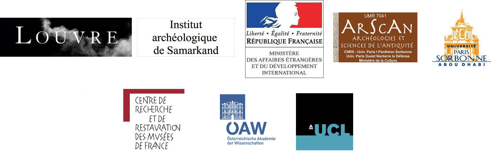

Présentation du programme de recherche dans l'Oasis de Boukhara
Le département des Arts de l’Islam du musée du Louvre, en partenariat avec le Ministère des Affaires Etrangères et l’Institut d’Archéologie de Samarkand, a ouvert en 2009 une mission archéologique dans l’Oasis de Boukhara. L’objectif est d’étudier le phénomène d’occupation humaine de l’oasis et de reconsidérer le phénomène urbain et culturel dans cette région, en le comparant et en l’envisageant au travers du prisme de ses relations avec les villes khorassaniennes et iraniennes. Il s’agit également de procéder à une étude de la culture matérielle et de son évolution.
Ce programme scientifique est constitué de plusieurs axes de recherche: l’étude géomorphologique de la région; l’étude des occupations humaines à travers la fouille archéologique et les prospections pédestres et satellites; l’étude topographique des sites les plus importants; l’étude historiographique; l’étude socio-archéologique; l’étude ethnoarchéologique; l’étude palynologique; l’étude de la culture matérielle avec des spécialistes qui travaillent sur la céramique et le verre; la réalisation d’un SIG; la mise en ligne d’un SIGWeb; la programmation d’une exposition sur l’Ouzbékistan qui concerne l’écart chronologique et les facteurs culturels retrouvés en fouille, et qui s’étale de la période hellénistique à Tamerlan.
L’étude géomorphologique est menée en collaboration avec Eric Fouache (Paris 4, La Sorbonne/La Sorbonne Abu Dhabi) et le laboratoire CEREGE d’Aix en Provence. Ce programme, qui a démarré en 2013, porte sur l’étude du bassin versant de la rivière Zarafshan, dont sa partie terminale est aujourd’hui définie comme «oasis de Boukhara». L’étude palynologique est menée en collaboration avec Valérie Andrieu-Ponel, maître de conférences et chercheuse (IMBE) à l’Université Aix-Marseille. Ce programme rentre dans le cadre d’étude environnementale de l’oasis, qui accompagne l’étude géomorphologique. La saison 2014 a été consacrée à la poursuite de l’étude du bassin versant, l’étude des zones les plus séismiques de la région, probablement à l’origine de certaines modifications des rivières et aux prélèvements d’échantillons de sédiments dans les paléocours repérés pour les analyses OSL.
La mission archéologique française concentre à présent la fouille, à travers l’ouverture de plusieurs chantiers, sur le site de Romitan, ville au cœur de l’Oasis, Paykend, aux abords sud-ouest de l’oasis et à Iskijkat, à l’est de l’oasis. La campagne de fouille effectuée en 2013 à Paykend a vu surtout la poursuite du chantier E, où le quartier de potiers continue d’être mis au jour dans sa complexité. Le travail sur le chantier B s’est focalisé sur l’étude des différentes phases de l’habitat du IXe siècle. L’étude concernant l’extension de la nécropole dans le Rabad Est, datant des Xe-XIe/XVIIIe siècles ap. J.C., a été achevée. Les campagnes de fouille effectuées en 2012 et 2013 à Romitan ont vu l’achèvement de la topographie du site. Cinq chantiers ont été ouverts (A-E) sur ce site, dont deux sondages stratigraphiques, un sur la terrasse occidentale de la citadelle, l’autre dans la partie sud du Shahrestan 2. Trois fouilles extensives sont en cours de réalisation: deux sur les remparts Est et Ouest, mettant au jour le système défensif de la ville, une au sommet de la citadelle, mettant au jour la fortification palatiale ainsi que les espaces royaux. Suite au travail de prospection par télédétection et suite à l’étude des sources historiques, un tepe se situant sur le chemin portant les caravanes de Boukhara à la sortie de l’oasis, et donc sur la route pour Samarkand, il a été découvert. Il s’agirait d’Iskijkat. Rapidement, une prospection archéologique a été effectuée montrant une importante occupation préislamique et islamique, laquelle s’étale jusqu’à l’époque Shaybanide, XVIe siècle. Une seconde mission de prospection a été réalisée afin de mieux étudier les matériaux de surface sur et autour du site. En 2014, une fouille stratigraphique a été effectuée sur le site, mettant au jour toute la chronologie de la ville, depuis sa fondation jusqu’à son abandon.
La mission archéologique franco-ouzbèke réalise depuis 2011 une prospection systématique de l’Oasis de Boukhara. La prospection archéologique est précédée par une prospection par télédétection, basée sur la reconnaissance de sites à travers l’étude de différentes cartes: cartes satellites LandSat7, cartes satellites Corona, cartes SPOT, photos aériennes, cartes issues de ArcGIS MAP. Cette prospection archéologique se concentre sur les villes dites «tripartites», constituées donc d’une citadelle, d’un shahrestan et d’un faubourg.
Dans le cadre des prospections archéologiques la céramique est collectée de façon systématique. La céramique sera ensuite étudiée et comparée directement avec celle provenant des sites fouillés.
Les premiers résultats, observables après la mission archéologique de 2013, montrent à présent un corpus de 1146 sites identifiés (Rante, R. "Survey of the Bukhara Oasis", à paraître), toutes périodes confondues. Les typologies des sites à présent déterminées sont: «tripartite», «bipartite», «tepe unique», «kurgan», «fort», «caravansérail», «moulin», «aire de dispersion de céramique», «aire de production».
L’étude de la céramique est réalisée par Gabriele Puschnigg, chercheur à l’University College of London. L’étude se focalise à présent sur la céramique des sites fouillés dans l’oasis de Boukhara.
L’étude historiographique est menée en collaboration avec Florian Schwarz, historien et directeur de l’Institut d’Iranologie de Vienne. Cette étude se focalise sur une dynamique de reconstruction de longue durée de la topographie de l’oasis (occupations humaines, système d’irrigation, routes et division administrative) depuis le début de l'époque islamique jusqu'à la fin du XIXe siècle. Celle-ci est basée sur un large éventail de sources écrites publiées et inédites: textes narratifs (géographes médiévaux, chroniques locales et générales, hagiographie etc.), archives (vaqfiyyas et documents associés à ceux-ci, listes administratives) et prospection géographique de la période coloniale. L’identification des certaines villes découvertes sur le terrain, dont Iskijkat, a été établie et confirmée à travers cette étude approfondie sur les sources historiques médiévales et modernes.
L’étude socio-archéologique est réalisée en collaboration avec Luigi Tronca, sociologue, maître de conférences et chercheur à l’Université de Vérone. Cette étude vise à l’identification du réseau commercial dans l’«espace oasis», à travers différents indicateurs comme le transport fluviatile et celui routier, à la période médiévale.
L’étude ethnoarchéologique est réalisée en collaboration avec Ilaria Scerrato, chercheur à l’Université «La Sapienza» de Rome. Ce travail se veut d’appréhender l’espace domestique entre habitat médiéval (IXe-Xe siècles) et celui moderne et contemporain. Ce travail vise aussi à l’étude de certaines productions de céramique.
L’étude du verre est à présent sous la responsabilité de Yoko Shindo, professeur à Waseda University (Tokyo), en collaboration avec Yasuko Fujii. Cette étude a démarré en 2014 et le matériel est encore à l’étude.
Les analyses physico-chimiques, TL/OSL, radiocarbone et pétrographiques sont dirigées par les équipes du Centre de Recherche et Restauration des musées de France (C2RMF).

MAFOUB.com
Mission Archéologique Franco-Ouzbèke dans l'Oasis de Boukhara (Musée du Louvre)
© All rights reserved